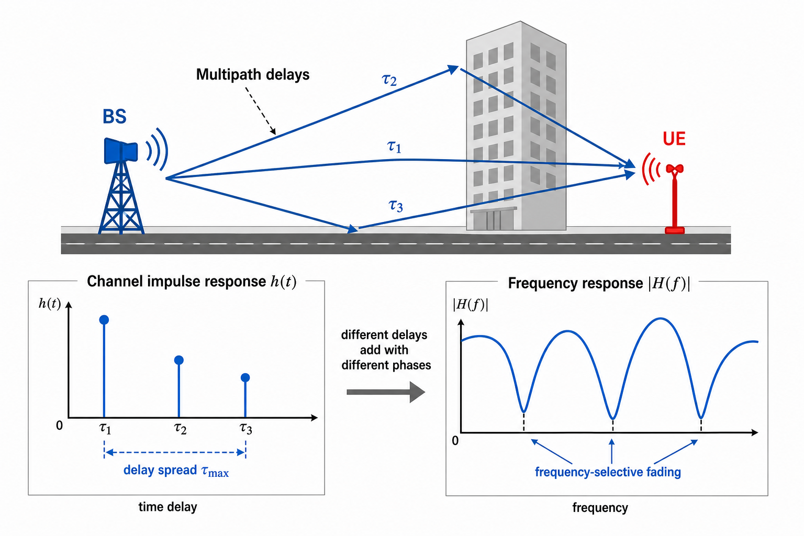
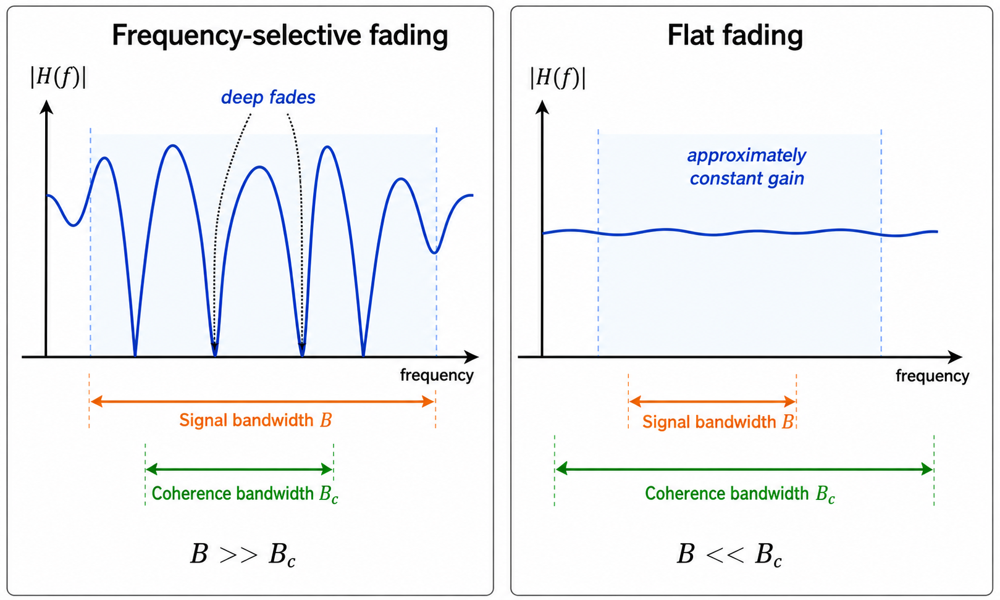
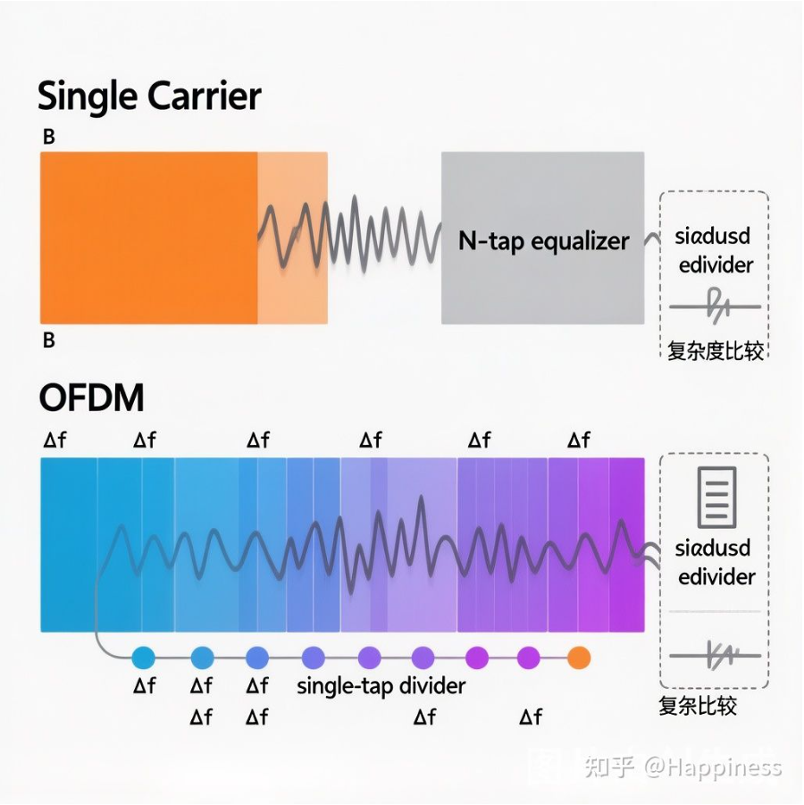
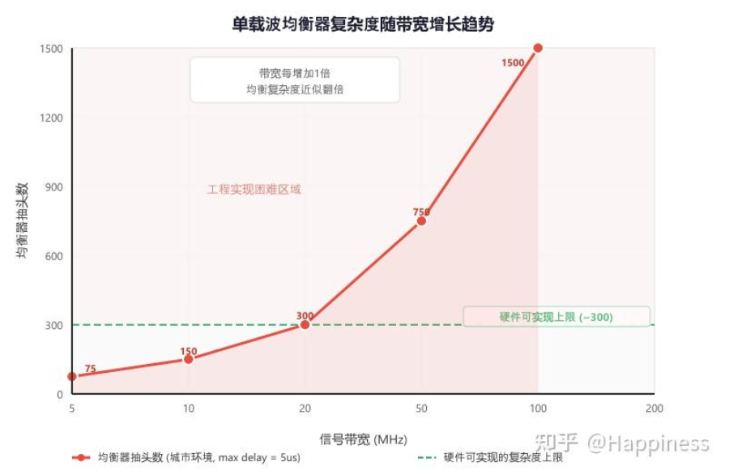

第 1 讲：为什么需要 OFDM？——从单载波的困境说起
在开始正式学习 OFDM 之前，我想先带大家回到一个根本问题：为什么我们需要 OFDM？它到底解决了什么问题？
这个问题看似简单，但它实际上触及了 OFDM 存在的全部理由。只有理解了单载波的困境，你才能真正理解 OFDM 的设计动机。
一、无线信道的“多径效应”：信号的好帮手，也是大麻烦
在理想情况下，电磁波从发射天线到接收天线，走的是一条直线路径。但现实世界没那么简单——高楼、山体、地面、车辆……到处都是反射体。发射出去的信号，会通过多条不同的路径到达接收端，这就是多径效应（Multipath Effect）。
你站在城市街道上用手机上网，信号可能通过以下三条路径到达你：
- 直射路径：从基站直接到达你
- 地面反射：从地面反射后到达你
- 建筑反射：从旁边的建筑反射后到达你
每条路径的长度不同，到达时间自然也不同。最先到达的可能是反射信号，最后到达的可能是直射信号——这完全取决于实际环境。
从频域的角度看，多径效应会导致频率选择性衰落（Frequency Selective Fading）。什么意思呢？由于不同频率的信号经过多径叠加后相位不同，某些频率点上的信号会相互增强，而另一些频率点上的信号会相互抵消。结果就是，信道的频率响应变得“坑坑洼洼”——某些频段信号质量很好，某些频段信号几乎完全消失。

我们可以用一个简单的数学模型来描述多径信道。信道的冲激响应可以表示为：
\[ h(t)=\sum_{l=0}^{L-1}\alpha_l\cdot\delta(t-\tau_l) \]
这个式子的意思是：多径信道可以看成若干条“延迟 + 衰减/相位旋转”的路径叠加起来。其中 $L$ 是路径数量，$\tau_l$ 是第 $l$ 条路径的传播时延，$\delta(t-\tau_l)$ 表示这一条路径会把信号延迟 $\tau_l$。
更准确地说，$\alpha_l$ 通常不是单纯的实数衰减，而是第 $l$ 条路径的复增益，既包含幅度衰减，也包含相位旋转：
\[ \alpha_l=|\alpha_l|e^{j\phi_l} \]
从冲激响应到接收信号
如果发射信号是 $x(t)$，接收信号就是发射信号和信道冲激响应的卷积：
\[ y(t)=x(t)*h(t) \]
把多径信道的 $h(t)$ 代入进去：
\[ y(t) =x(t)*\sum_{l=0}^{L-1}\alpha_l\delta(t-\tau_l) \]
利用卷积的线性性，可以把每条路径的贡献拆开：
\[ y(t) =\sum_{l=0}^{L-1}\alpha_l\left[x(t)*\delta(t-\tau_l)\right] \]
而和延迟冲激卷积，只会把信号整体延迟：
\[ x(t)*\delta(t-\tau_l)=x(t-\tau_l) \]
所以接收信号可以写成：
\[ y(t)=\sum_{l=0}^{L-1}\alpha_l x(t-\tau_l) \]
这就是多径模型的核心含义：接收信号是发射信号的多个副本叠加而成；每个副本有不同的时延、不同的幅度衰减，通常还带有不同的相位旋转。
再从频域看，对 $h(t)$ 做傅里叶变换，可以得到信道频率响应：
\[ H(f)=\sum_{l=0}^{L-1}\alpha_l e^{-j2\pi f\tau_l} \]
不同路径在某个频率 $f$ 上会以不同相位叠加。有些频率点相位接近，叠加后会增强；有些频率点相位相反，叠加后会抵消。于是 $H(f)$ 在频域上出现高低起伏和深陷，这就是频率选择性衰落。
所有路径中最大时延与最小时延之差，叫做时延扩展（Delay Spread），通常记为 $\tau_{max}$。
时延扩展直接决定了信道的相干带宽（Coherence Bandwidth）：
\[ B_c\approx\frac{1}{5\tau_{max}} \]
这是一个非常重要的概念。如果信号带宽 $B$ 远大于 $B_c$（即 $B\gg B_c$），信号的不同频率分量会经历不同的衰落——这就是频率选择性衰落。反之，如果 $B\ll B_c$，整个信号带宽内的衰落近似一致，叫做平坦衰落（Flat Fading）。
相干带宽里的“相干”到底指什么
这里的“相干”不是接收机里的相干积分。相干积分说的是：在已知相位或已经相位对齐的前提下，对不同时刻的复数 I/Q 样本直接累加，不先取模，也不先做 $I^2+Q^2$。它关心的是时间上的信号样本能不能保持相位关系。
相干带宽里的“相干”，说的是不同频率点上的信道响应是否仍然相似、相关。如果两个频率点 $f_1$ 和 $f_2$ 的间隔小于相干带宽，通常可以认为：
\[ H(f_1)\approx H(f_2) \]
也就是说，这两个频率分量看到的信道增益和相位变化差不多。如果频率间隔超过相干带宽，一个频点可能处在深衰落，另一个频点可能信道很好，它们就不再“相干”。
因此，这里的“带宽”也不是发射信号本身的带宽，而是信道在频域上还能近似保持平坦的频率范围。相干带宽越大，说明信道频率响应变化越慢；相干带宽越小，说明信道频率响应起伏越快，越容易出现频率选择性衰落。
教材和讲义中的常见说法
无线通信教材里通常把相干带宽描述为一个统计量：它衡量的是“信道可以被认为是平坦的频率范围”。在这个范围内，各频率分量通过信道时会经历近似相同的幅度增益和相位变化。换句话说，相干带宽也可以理解为信道频率响应 $H(f)$ 的相关宽度。
更严格地说，可以通过频率相关函数来定义相干带宽：当 $H(f)$ 和 $H(f+\Delta f)$ 的相关性下降到某个阈值，例如 0.5 或 0.9 时，对应的 $\Delta f$ 就可以作为相干带宽。因此，$B_c$ 不是一个唯一的物理常数，它和采用的相关阈值有关。
常见教材还会使用 RMS 时延扩展 $\sigma_\tau$ 给出经验关系：
\[ B_c \propto \frac{1}{\sigma_\tau} \]
例如在相关性阈值较宽松时，常见近似是 $B_c\approx 1/(5\sigma_\tau)$；如果要求更高的相关性，也会看到 $B_c\approx 1/(50\sigma_\tau)$ 这样的写法。本讲前面使用 $\tau_{max}$ 是为了用最大时延扩展做直觉解释，核心关系仍然是：时延扩展越大，相干带宽越小。
可以参考这些教材和讲义的文字解释：
- Rutgers WINLAB Wireless Communications lecture notes：把相干带宽解释为信道可近似认为平坦的频率范围，并说明超过 $B_c$ 的两个频率分量会被信道以明显不同的方式影响。
- Tse & Viswanath, Fundamentals of Wireless Communication：从“delay spread ↔ coherence bandwidth”的对偶关系解释 $W_c\sim 1/T_d$。
- Georgia Tech Coherence Bandwidth notes：强调时延扩展和相干带宽近似成反比，并用它判断平坦衰落和频率选择性衰落。
- Tlich et al., Coherence Bandwidth and RMS Delay Spread：从信道传输函数的频率相关性角度估计相干带宽。

二、单载波的困境：均衡器扛不住了
既然信道是频率选择性的，那最直接的想法就是：用均衡器把信道的畸变补偿回来。
单载波系统中，接收端使用时域均衡器（通常是线性横向均衡器 FIR 或判决反馈均衡器 DFE）来消除多径造成的码间干扰（ISI）。
先从时域理解 ISI
ISI 可以从时域上理解为：一个符号经过信道后，时域波形被拉长、拖尾，跑进了前后符号的判决时刻里，从而干扰了其他符号。如果信道和接收滤波后的等效脉冲响应只在一个符号周期内有效，那么每个判决时刻只看到当前符号；如果响应拖尾跨越多个符号周期，那么一个判决时刻就会混入前后符号的贡献。
把发射符号序列记为 $a[n]$，把发射滤波器、无线多径信道、接收滤波器和采样合在一起，得到一个等效离散信道冲激响应 $g[n]$。如果发送一个单位冲激符号，接收端在不同采样时刻看到的响应就是：
\[ g[0],\ g[1],\ g[2],\ldots \]
因此当前接收采样可以写成：
\[ r[n]=a[n]g[0]+a[n-1]g[1]+a[n-2]g[2]+\cdots \]
这里 $a[n]g[0]$ 是当前符号对当前采样点的贡献；$a[n-1]g[1]$、$a[n-2]g[2]$ 则是过去符号的拖尾对当前采样点的干扰。只要 $g[1]$、$g[2]$ 等非主抽头不为零，当前判决就不再只取决于当前符号，这就是 ISI。
补充：如何理解离散卷积里的 $g[1]$ 和 $g[n-k]$？
离散卷积常见有两种等价写法。第一种是按信道延迟 $m$ 来求和：
\[ r[n]=\sum_m a[n-m]g[m] \]
这个写法适合固定当前输出采样点 $r[n]$ 来看。每一项都满足“发送时刻 + 信道延迟 = 当前观察时刻”：$a[n-m]$ 是在 $n-m$ 时刻发送的符号，$g[m]$ 表示这一路经过 $m$ 个采样/符号间隔后到达，所以它对 $r[n]$ 的贡献就是 $a[n-m]g[m]$。因此前一个符号 $a[n-1]$ 经过 1 个单位延迟后到达当前采样点，对应的是 $g[1]$，不是 $g[-1]$。
同一个卷积也可以把求和变量换成输入符号的发送时刻 $k=n-m$，写成：
\[ r[n]=\sum_k a[k]g[n-k] \]
这个写法适合固定某个输入符号 $a[k]$ 来看。符号 $a[k]$ 在发送时刻 $k$ 激发出一份信道响应；到接收端观察采样 $n$ 时，它已经经历了 $n-k$ 个采样/符号间隔的延迟，因此贡献为 $a[k]g[n-k]$。这里 $k$ 是输入符号的发送时刻，$n$ 才是当前被观察和判决的接收采样时刻。
例如等效信道只有三个抽头 $g[0],g[1],g[2]$ 时，有：
\[ r[n]=a[n]g[0]+a[n-1]g[1]+a[n-2]g[2] \]
若单独看符号 $a[1]$，它会在 $r[1]$ 中贡献 $a[1]g[0]$，在 $r[2]$ 中贡献 $a[1]g[1]$，在 $r[3]$ 中贡献 $a[1]g[2]$。反过来固定观察 $r[3]$，则有：
\[ r[3]=a[3]g[0]+a[2]g[1]+a[1]g[2] \]
这说明经过信道后的接收采样不是“单个符号延迟后的符号”，而是多个输入符号在同一个判决时刻的加权叠加。也可以反过来看：每个输入符号都会把信道响应复制一份并平移到自己的发送时刻附近，再按 $g[0],g[1],g[2],\ldots$ 逐渐影响后续采样点。在因果信道模型里，如果 $n<k$，则 $g[n-k]=0$，未来符号不会提前影响当前采样。
只有当等效脉冲响应相对于判决时刻存在“提前分量”时，才会写出 $g[-1]$。例如 $a[n+1]g[-1]$ 表示未来符号提前影响当前判决点，这类项通常叫前游 ISI（precursor ISI）。在严格因果、并且把主到达路径对齐到 $g[0]$ 的简化模型里，过去符号拖尾对应的是正索引 $g[1],g[2],\ldots$。
线性横向均衡器 FIR：用一个滤波器反向补偿拖尾
线性横向均衡器本质上就是一个 FIR 滤波器，也叫 tapped-delay-line equalizer，抽头延迟线均衡器。它把当前和过去若干个接收样本取出来，分别乘以一组系数，再加权求和：
\[ z[n]=\sum_{k=0}^{N-1}c_k r[n-k] \]
其中 $c_k$ 是均衡器系数，$N$ 是抽头数。所谓“横向”，可以理解为实现结构中一排延迟单元横向展开：$r[n]$、$r[n-1]$、$r[n-2]$ 依次经过延迟链，每一路乘一个系数，最后加起来。
从 $z$ 域看，FIR 滤波器的系统函数是 $z^{-1}$ 的多项式：
\[ C(z)=c_0+c_1z^{-1}+c_2z^{-2}+\cdots+c_{N-1}z^{-(N-1)} \]
补充：FIR 多项式里的 $z^{-1}$ 怎么理解？
$z^{-1}$ 就是一个单位延迟：在 $z$ 域中，$z^{-1}X(z)$ 对应时域里的 $x[n-1]$；$z^{-2}X(z)$ 对应 $x[n-2]$；一般地，$z^{-k}$ 表示延迟 $k$ 个采样周期。也就是说，FIR 不是普通代数变量的多项式，而是关于“延迟算子” $z^{-1}$ 的多项式。
例如 $C(z)=c_0+c_1z^{-1}+c_2z^{-2}$ 对应 $z[n]=c_0r[n]+c_1r[n-1]+c_2r[n-2]$。实现时就是延迟器、乘法器和加法器，所以把 FIR 理解为“由乘法和加法实现的延迟多项式”是正确的。
均衡器的目标是让“信道 + 均衡器”的总响应尽量接近一个冲激。若接收信号为：
\[ r[n]=a[n]*g[n] \]
均衡器输出为：
\[ z[n]=r[n]*c[n]=a[n]*g[n]*c[n] \]
那么我们希望：
\[ g[n]*c[n]\approx\delta[n] \]
也就是把信道拖尾尽量“压回”一个主采样点。从频域看，均衡器的原理听起来更简单：设计一个滤波器，使其频率响应尽量接近信道频率响应的倒数，两者串联后总响应就恢复平坦：
\[ H_{EQ}(f)=\frac{1}{H(f)} \]
但线性均衡器有一个现实问题：如果某些频率点上的 $H(f)$ 很小，直接取倒数会把这些频率点的噪声也一起放大，这叫噪声增强（noise enhancement）。
判决反馈均衡器 DFE：用已判决符号抵消拖尾
DFE 全称是 Decision Feedback Equalizer，判决反馈均衡器。它的核心想法是：已经判决出来的过去符号，可以用来估计它们对当前符号造成的 ISI，然后把这部分干扰减掉。
DFE 通常由两部分组成：前馈滤波器 FFE 处理接收采样，反馈滤波器 FBE 使用已经判决出的符号来抵消后游 ISI。一个简化表达是：
\[ z[n]=\sum_k f_k r[n-k]-\sum_m b_m\hat{a}[n-m] \]
其中 $f_k$ 是前馈滤波器系数，$b_m$ 是反馈滤波器系数，$\hat{a}[n-m]$ 是过去已经判决出来的符号。第二项的作用就是把过去符号拖尾造成的干扰从当前输出里减掉。
补充：DFE 的优势和代价
DFE 的优势是不用对所有深衰落频点硬做倒数，因此相比纯线性均衡器，噪声增强通常更轻。但它的代价是误差传播：如果过去某个符号判错了，反馈滤波器会把这个错误当成真实符号继续用于抵消 ISI，错误就可能向后传递。
抽头数：均衡器能覆盖多长的信道记忆
均衡器的抽头数就是 FIR/均衡器里有多少个延迟分支，也就是有多少个系数。例如：
\[ z[n]=c_0r[n]+c_1r[n-1]+c_2r[n-2]+c_3r[n-3] \]
这是一个 4 抽头均衡器。抽头数越多，均衡器能够覆盖的信道记忆越长，也就越有能力补偿长拖尾、多径严重的信道。但每增加一个抽头，通常就多一个复数乘法器和一条加法路径，硬件面积、功耗、运算延迟和自适应收敛难度都会增加。
但问题是——这个均衡器有多复杂？
在实际系统中，均衡器的抽头数大约与时延扩展（以符号周期为单位）成正比。一个经验公式是：需要大约 2 ～ 3 倍时延扩展（归一化到符号周期）的抽头数。
我们来算一笔账。假设一个城市环境，最大时延扩展 $\tau_{max}=5\mu s$：
| 带宽 | 符号周期 | 归一化时延扩展 | 均衡器抽头数 |
|---|---|---|---|
| 5 MHz | 0.2 μs | 25 | ~75 |
| 10 MHz | 0.1 μs | 50 | ~150 |
| 20 MHz | 0.05 μs | 100 | ~300 |
| 100 MHz (5G) | 0.01 μs | 500 | ~1500 |
看出来了吗？随着带宽增长，均衡器的复杂度急剧上升。
5MHz 带宽时 75 个抽头的均衡器，到了 100MHz 就需要 1500 个抽头。每个抽头都需要做复数乘法运算，这对硬件来说简直是灾难。而且在 DFE 结构中，误差会在反馈环路中传播，收敛也是个问题。
这就是单载波的核心困境：带宽越宽，多径越严重，均衡器越复杂，系统越难实现。

三、先厘清：bit、调制符号、OFDM 符号与 I/Q 调制
在继续讲 OFDM 之前，需要先把“bit”“符号”“OFDM 符号”和“I/Q 调制”这几个词分开。它们经常同时出现，但并不在同一个层次上。
最常用的层次关系是：
\[ \text{bit}\ \longrightarrow\ \text{调制符号}\ \longrightarrow\ \text{OFDM 符号}\ \longrightarrow\ \text{射频波形} \]
| 层次 | 它是什么 | 典型表示 |
|---|---|---|
| bit | 最原始的信息单位，只取 0 或 1 | $0,1$ |
| 调制符号 | 若干 bit 映射成的星座点，也就是一个实数或复数值 | $a_k=I_k+jQ_k$ |
| OFDM 符号 | 一组子载波调制符号经过 IFFT 后形成的一整段时域信号，实际发送时还要加 CP | $\text{CP}+\text{IFFT}\{X[k]\}$ |
1. 调制符号不是一开始就是一段时域波形
在 BPSK、QPSK、QAM 里，一个“调制符号”严格来说首先是星座图上的一个点。BPSK 的符号可以写成：
\[ a_k\in\{+1,-1\} \]
QPSK 或 QAM 的符号通常是复数：
\[ a_k=I_k+jQ_k \]
它本身是一个抽象的调制值，表示一组 bit 被映射到了哪个幅度和相位。要真正发出去，还需要经过脉冲成形，变成连续时间基带波形：
\[ s(t)=\sum_k a_k p(t-kT_s) \]
其中 $p(t)$ 是脉冲成形波形，$T_s$ 是符号周期。所以第 $k$ 个调制符号在时域中对应的是 $a_kp(t-kT_s)$ 这一段被缩放、移位后的波形。换句话说：调制符号严格说是一个星座点；从发射波形角度看，它经过脉冲成形后，才占用一个符号周期并表现为一段时域波形。
不同调制方式下，一个调制符号携带的 bit 数不同：
| 调制方式 | 星座点数量 | 每个调制符号携带 bit 数 |
|---|---|---|
| BPSK | 2 | 1 bit |
| QPSK | 4 | 2 bit |
| 16QAM | 16 | 4 bit |
| 64QAM | 64 | 6 bit |
| 256QAM | 256 | 8 bit |
2. OFDM 符号是一整段多载波时域信号
OFDM 里的“符号”又高了一层。一个 OFDM 符号不是一个 QPSK/QAM 星座点，而是很多个子载波上的调制符号共同组成的一段时域波形。
先把一批调制符号放到不同子载波上：
\[ X[0],X[1],\ldots,X[N-1] \]
这里每个 $X[k]$ 都可以是一个 QPSK、16QAM 或 64QAM 星座点。发射端对这一组频域数据做 IFFT：
\[ x[n]=\mathrm{IFFT}\{X[k]\} \]
得到的一段时域采样序列 $x[0],x[1],\ldots,x[N-1]$，就是 OFDM 符号的主体。实际发送时还会在前面复制一段尾部样本作为循环前缀：
\[ \text{OFDM symbol}=\text{CP}+\text{IFFT output} \]
因此，一个 OFDM 符号通常同时承载很多 bit。例如 1200 个有效子载波都使用 16QAM 时，一个 OFDM 符号承载的编码后 bit 数是：
\[ 1200\times4=4800\ \text{bit} \]
如果再考虑编码率为 $1/2$，那么其中有效信息 bit 大约是 $2400$ bit。
3. 为什么基带信号常写成复数
QPSK、QAM 和 OFDM 的数字基带通常写成复信号：
\[ s(t)=I(t)+jQ(t) \]
这并不是说天线上真的能发射“复数电压”。复数只是一个非常自然的数学表示：它把窄带信号的两个独立自由度写在一起。
从直角坐标看，$I(t)$ 和 $Q(t)$ 是复平面上的两个正交坐标；从极坐标看，同一个信号也可以写成：
\[ s(t)=A(t)e^{j\phi(t)} \]
也就是幅度 $A(t)$ 和相位 $\phi(t)$。所以复数既可以看成二维向量，也可以看成“幅度 + 相位”。这正好适合表示 QPSK/QAM 星座点和 OFDM 中每个子载波上的复数数据。
4. 发射端 I/Q 调制：把复基带变成真实射频波形
发射端真正要送到天线的是实数射频信号。复基带到射频的搬移可以写成：
\[ s_{RF}(t)=\Re\{s(t)e^{j2\pi f_ct}\} \]
把 $s(t)=I(t)+jQ(t)$ 代入，并使用欧拉公式：
\[ e^{j2\pi f_ct}=\cos(2\pi f_ct)+j\sin(2\pi f_ct) \]
展开后取实部，可以得到硬件真正实现的形式：
\[ s_{RF}(t)=I(t)\cos(2\pi f_ct)-Q(t)\sin(2\pi f_ct) \]
也就是说，发射机不是“发射一个复数”，而是用 I/Q 调制器完成两路正交调制：
I(t) ── DAC ── LPF ── × cos(2πfct) ──┐
├── 加法器 ── RF 输出
Q(t) ── DAC ── LPF ── × -sin(2πfct) ─┘这里选择 $\sin$ 和 $\cos$ 的根本原因就是正交性。在合适的积分区间内：
\[ \int \cos(2\pi f_ct)\sin(2\pi f_ct)\,dt=0 \]
因此 I 路和 Q 路虽然被合成到同一个真实射频波形里，接收端仍然可以通过相干解调把它们分开。
5. 为什么发射端不只用一路
如果只用一路实信号，例如：
\[ s_{RF}(t)=A(t)\cos(2\pi f_ct) \]
那就只有一个实数自由度，最多表达一维星座，比如 PAM 或 BPSK。BPSK 可以用 $+1$ 和 $-1$ 表示，也可以理解成载波相位 $0^\circ$ 和 $180^\circ$，但它仍然只是在一条线上取点。
QPSK 和 QAM 则需要二维星座。例如 QPSK 的点可以写成：
\[ 1+j,\quad -1+j,\quad -1-j,\quad 1-j \]
如果只有 I 路，就无法区分 $1+j$ 和 $1-j$，因为它们的 I 分量相同，差别完全在 Q 分量上。16QAM、64QAM 更明显，它们需要同时控制 I 和 Q 两个坐标。
OFDM 也是如此。IFFT 输出的基带采样通常是复数：
\[ x[n]=I[n]+jQ[n] \]
所以发射端需要 I/Q 两路来把这个复基带序列搬到射频。工程上也可以用高速 DAC 直接生成实数 IF/RF 波形，或者用极坐标发射机分别控制幅度和相位，但本质上仍然要控制两个自由度：幅度/相位，或者等价的 I/Q。
I/Q 调制还天然适合做单边带调制和镜像抑制。原因是复基带频谱不必共轭对称，可以区分正频率和负频率；而纯实信号的频谱必须共轭对称，容易同时带出上下两个边带。
6. 接收端为什么也要恢复 I/Q 两路
接收机收到的是一个真实射频信号，但它里面同时携带了 I 和 Q 两个正交分量。常见零中频接收机用两路正交本振混频：
RF 信号 ── × cos(2πfct) ── LPF ── ADC ── I[n]
└─ × -sin(2πfct) ─ LPF ── ADC ── Q[n]如果只用 $\cos$ 这一路，低通后只能得到 I 分量；再用 $-\sin$ 这一路，低通后才能得到 Q 分量。两路合起来，才能恢复复基带：
\[ r[n]=I[n]+jQ[n] \]
这并不意味着所有接收机物理上都必须有两颗 ADC。也可以用单路高速 ADC 先采样 IF/RF，再在数字域产生 I/Q。但无论采用哪种架构，后续同步、FFT、信道估计、均衡和解调都需要恢复出复基带的两个分量。
7. 这和 OFDM 接收端 FFT 有什么关系
OFDM 中每个子载波上的数据 $X[k]$ 通常都是复数 QAM 符号，信道响应 $H[k]$ 也是复数。加入循环前缀并满足同步条件后，接收端去 CP、做 FFT，可以得到近似关系：
\[ Y[k]=H[k]X[k]+W[k] \]
于是每个子载波只需要做一次复数除法就能均衡：
\[ \hat X[k]=\frac{Y[k]}{H[k]} \]
这就是前面说“FFT 之后，频域信号天然就是各子载波上的独立数据”的意思。它不是说这些数据在统计意义上一定独立，而是说在理想 OFDM 条件下，第 $k$ 个 FFT 输出主要只和第 $k$ 个子载波上的 $X[k]$ 有关，不再像单载波时域均衡那样需要用很多抽头去拆开前后符号的混叠。
四、OFDM 的破局思路：分而治之
OFDM 的核心思想，用一句话概括就是：
把一个宽带信道，切分成多个窄带子载波，让每个子载波上的衰落都变成平坦衰落。
这样的话，每个子载波上只需要做一个单抽头均衡器（也就是复数除法），复杂度从 $O(N_{taps})$ 直接降到了 $O(1)$ per subcarrier。
这个思路的精妙之处在于，它利用了 DFT（离散傅里叶变换）的数学性质来实现“分而治之”：
\[ X[k]=\mathrm{DFT}\{x[n]\}=\sum_{n=0}^{N-1}x[n]\cdot e^{-j\frac{2\pi}{N}kn} \]
在接收端做 DFT（即 FFT）之后，频域信号天然就是各子载波上的独立数据，可以直接逐子载波做均衡。整个过程不需要复杂的时域滤波。
用一个更直观的类比来理解：

五、OFDM 的关键参数：一窥究竟
为了让这个“分而治之”的方案切实可行，OFDM 在设计上做了几个关键选择：
1. 子载波间隔 = 1/T（T 是 OFDM 符号周期）
这个选择保证了子载波之间的正交性（Orthogonality），即使它们的频谱在频域上是重叠的，也不会互相干扰。这是 OFDM 中最精妙的设计，我们将在第 2 讲详细展开。
2. 循环前缀（Cyclic Prefix, CP）
在每个OFDM 符号前面，复制符号尾部的一段作为前缀。这个看似多余的操作，巧妙地消除了多径带来的符号间干扰（ISI）和子载波间干扰（ICI）。我们将在第 5 讲深入讨论。
3. 子载波数量 N 的选择
子载波数量越多，每个子载波越窄，频谱效率越高，但 FFT 的计算量也越大，对相位噪声也越敏感。典型的选择范围是 64 到 4096，具体取决于带宽和子载波间隔。
以 LTE 系统为例，20MHz 带宽配置：
- 子载波间隔：$\Delta f = 15\mathrm{kHz}$
- 子载波数量：$N = 2048$（实际使用 1200 个）
- OFDM 符号周期：$T=1/\Delta f = 66.7\mu s$
- 循环前缀长度：$4.7\mu s$（常规 CP）
这些参数不是随意选的，背后都有严格的工程考量。
六、本讲小结
让我们用一张表来总结单载波和 OFDM 的核心区别：
| 维度 | 单载波 | OFDM |
|---|---|---|
| 均衡复杂度 | O(N_taps)，随带宽增长 | O(1)/子载波，与带宽无关 |
| 带宽扩展性 | 差 | 好 |
| 对频率选择性信道 | 敏感，需复杂均衡 | 天然适应 |
| 峰均比（PAPR） | 低 | 高（这是OFDM的代价） |
| 对同步误差 | 较宽容 | 敏感（需要精确同步） |
可以看到，OFDM 并非完美无缺——它在降低均衡复杂度的同时，引入了高峰均比和对同步精度的严格要求。这些代价是真实存在的，也是我们后续课程中要重点讨论的问题。
但总体来说，对于宽带无线通信（带宽 > 5MHz），OFDM 的收益远远大于代价。这就是为什么 4G LTE、5G NR、Wi-Fi 4/5/6/7，几乎所有主流宽带无线标准，都不约而同地选择了 OFDM 作为物理层波形。